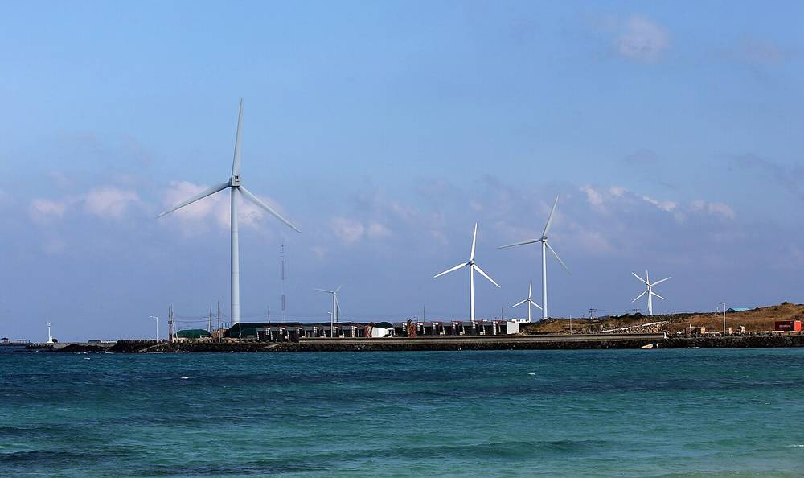

제주 해상풍력 목표 10GW→5GW로 낮췄지만…도의회 "추자 전력 전남행, 도민 이익은 어디로"

위성곤 지사 "새 단지는 도가 정하고 주민 동의 최우선"…전송망 경로·연관 산업 육성 놓고 도정질문 공방
위성곤 제주도지사가 공약했던 해상풍력 10GW 목표를 5GW로 절반 낮춘 수정 전략을 내놓은 뒤에도, 사업 실현성과 도민 이익 공유를 둘러싼 논란이 도의회 도정질문에서 이어졌다. 수정 전략은 새 해상풍력 단지 입지를 제주도가 직접 정하고 주민 동의를 가장 앞에 두는 것이 뼈대다.
도정질문에서 한권 더불어민주당 도의원은 추자 해상풍력의 전력을 제주가 아닌 전남으로 보내도록 계획을 바꾼 것이 사업자 편의를 위한 것 아니냐고 따졌다. 전남까지 거리가 더 멀고 전남 변전소들이 이미 포화 상태여서 전력수급기본계획 반영도 불투명하다는 지적이다.
위 지사는 정부의 부정적 입장을 이유로 들며, 해남이나 진도로 바로 잇는 방식은 약 50km면 되지만 150km를 돌아가는 방식에는 정부가 부정적이라고 답했다. 의원들 사이에서는 해상풍력이 발전 설비만 늘리고 관련 산업은 키우지 못할 수 있다는 우려도 나왔다.
시민에너지 관점
목표를 낮춘 것보다 중요한 것은 바다에서 나온 이익이 누구에게 돌아가느냐다. 덴마크와 독일 북부는 해상·육상 풍력에 주민 지분과 지역 기금을 붙여 수십 년 동안 지역 소득을 만들어 왔다. 전송망 경로와 사업자가 먼저 정해지고 주민은 나중에 설명을 듣는 방식이라면 '주민 동의 최우선'은 구호에 그칠 수 있다. 제주도는 새 단지마다 도민 출자와 이익 배분 비율을 입지 단계에서 먼저 확정하고, 그 내용을 조례로 묶어야 한다.
출처: JIBS 제주방송 2026-11-12 강석창 원문 보기
済州の洋上風力目標10GW→5GWに引き下げも…道議会「楸子の電力が全南へ、道民の利益はどこに」
魏聖坤知事「新団地は道が決め住民同意を最優先」…送電経路・関連産業育成で道政質問の攻防
魏聖坤（ウィ・ソンゴン）済州道知事が公約していた洋上風力10GWの目標を5GWへ半減させた修正戦略を示した後も、事業の実現性と道民への利益共有をめぐる論争が道議会の道政質問で続いた。修正戦略は、新たな洋上風力団地の立地を済州道が直接決め、住民同意を最優先に置くことが柱だ。
道政質問で、共に民主党の韓権（ハン・グォン）道議員は、楸子（チュジャ）洋上風力の電力を済州ではなく全羅南道へ送るよう計画を変えたのは事業者の便宜のためではないかと追及した。全南までの距離が長く、全南の変電所はすでに飽和状態のため、電力需給基本計画への反映も不透明だという指摘だ。
魏知事は政府の否定的な立場を理由に挙げ、海南や珍島へ直接つなぐ方式なら約50kmで済むが、150km迂回する方式に政府は否定的だと答えた。議員からは、洋上風力が発電設備を増やすだけで関連産業を育てられない恐れがあるとの懸念も出た。
市民エネルギーの視点
目標を下げたことより重要なのは、海から生まれる利益が誰に戻るかだ。デンマークや北ドイツは洋上・陸上風力に住民持分と地域基金を組み合わせ、数十年にわたり地域の所得を生み出してきた。送電経路と事業者が先に決まり、住民は後から説明を聞く方式なら「住民同意最優先」はスローガンで終わりかねない。済州道は新団地ごとに道民出資と利益配分の比率を立地段階で先に確定し、その内容を条例で定めるべきだ。
出典: JIBS 제주방송 2026-11-12 강석창 原文を読む
济州海上风电目标从10GW降至5GW…道议会：“楸子电力送往全南，道民利益在哪里”
魏圣坤知事：“新园区由道决定、居民同意优先”…围绕输电路线和相关产业培育展开道政质询攻防
济州道知事魏圣坤提出将竞选时承诺的10GW海上风电目标减半至5GW的修正战略后，围绕项目可行性和与道民分享收益的争议在道议会道政质询中仍在继续。修正战略的核心是由济州道直接确定新海上风电园区的选址，并把居民同意放在首位。
在道政质询中，共同民主党道议员韩权质问，把楸子海上风电的电力改为送往全罗南道而非济州，是否是为了照顾开发商。他指出，送往全南距离更远，而且全南变电站已经饱和，能否纳入电力供需基本计划也不确定。
魏圣坤以政府的消极立场作为理由回答说，直接连接海南或珍岛只需约50公里，但政府对绕行150公里的方式持否定态度。议员们还担心海上风电只会增加发电设施，却无法培育相关产业。
市民能源视角
比降低目标更重要的，是海上产生的收益最终归谁。丹麦和德国北部为海上和陆上风电配套居民股份和地方基金，几十年来持续创造地方收入。如果输电路线和开发商先定，居民事后才听说明，“居民同意优先”就可能只停留在口号上。济州道应在选址阶段就为每个新园区先确定道民出资和收益分配比例，并以条例加以固定。
来源: JIBS 제주방송 2026-11-12 강석창 查看原文
Jeju cuts offshore wind goal from 10GW to 5GW, but councillors ask where islanders' share has gone
Governor Wi says the province will choose new sites and put resident consent first; debate over grid routing and local industry continues
Even after Jeju Governor Wi Seong-gon unveiled a revised strategy halving his pledged offshore wind target from 10GW to 5GW, questions over the plan's feasibility and how islanders will share the benefits continued in the provincial council. The revised strategy has the province choosing sites for new offshore wind farms itself and putting resident consent first.
At a council question session, Democratic Party councillor Han Kwon asked whether changing the Chuja offshore wind project to send its power to South Jeolla rather than Jeju was meant to suit the developer. He noted that the mainland route is longer and that South Jeolla substations are already saturated, leaving its inclusion in the national power supply plan uncertain.
Wi cited the central government's negative stance, saying a direct link to Haenam or Jindo would take about 50km but the government objects to a 150km detour. Councillors also voiced concern that offshore wind could add generating capacity without building related local industries.
Citizen Energy View
More important than the lower target is who receives the profits generated at sea. Denmark and northern Germany have attached resident shares and community funds to offshore and onshore wind for decades, creating lasting local income. If grid routes and developers are decided first and residents are briefed afterwards, 'resident consent first' risks becoming a slogan. Jeju should fix the share of resident investment and profit distribution for each new wind farm at the siting stage and put it into an ordinance.
Source: JIBS 제주방송 2026-11-12 강석창 Read the original